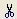
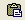
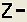
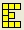
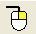
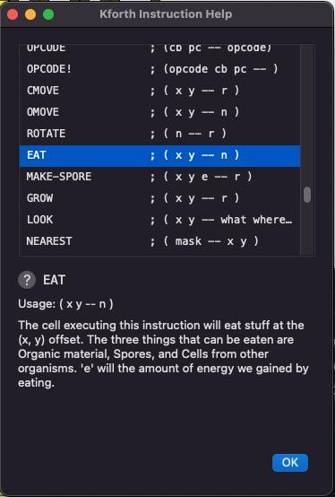
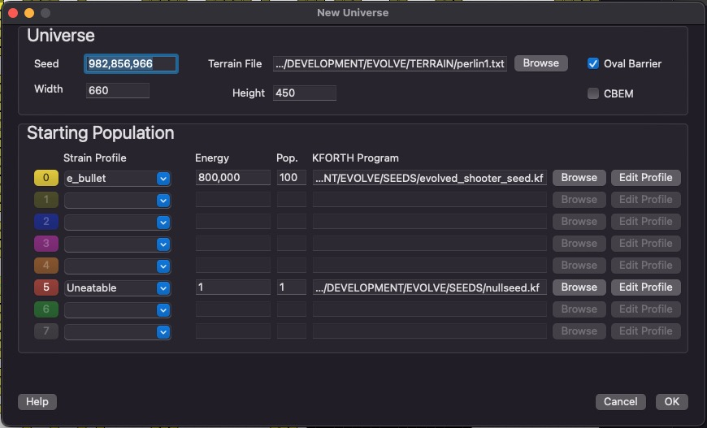
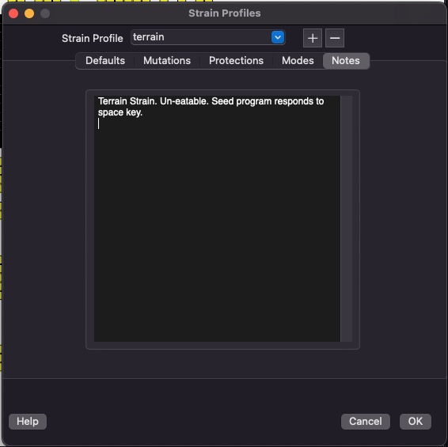
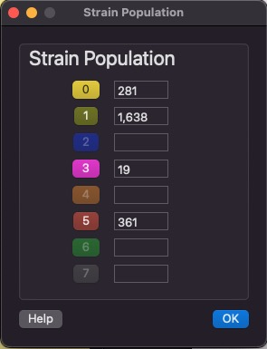

VOLVE 5.0
VOLVE 5.0
Overview
This shows a typical simulation window. The rest of the page describes various aspects of the Evolve application.
Toolbar
-
 - brings up a blank simulation for pasting test organisms into.
- brings up a blank simulation for pasting test organisms into.
-
 - open an existing simulation.
- open an existing simulation.
-
 - save current simulation.
- save current simulation.
-  - cut selected organism (removes it from the current simulation).
-
 - copy the selected organism to the clip board.
- copy the selected organism to the clip board.
-  - paste the organism from the clip board into the current simulation.
- - Simulate the universe 1 step.
-
 - start the simulator update the display after the number of steps specified by the speed control have been simulated.
Use this mode to view the simulation in "real-time".
- start the simulator update the display after the number of steps specified by the speed control have been simulated.
Use this mode to view the simulation in "real-time".
-
 - stop the simulation.
- stop the simulation.
-
 - Zoom in. (mouse wheel can also be used)
- Zoom in. (mouse wheel can also be used)
-  - Zoom out. (mouse wheel can also be used)
-
 - View all. Zoom all the way out and display entire universe.
- View all. Zoom all the way out and display entire universe.
-  - Examine an organism. After selecting an organism, press this button to examine the inner details of the organism. (View Organism).
-  - Right Click Tool. Configure the behavior of the right mouse button. See the section right click tools.
- - This is the speed control. It allows you to control the smoothness of the simulation. These slider and checkbox define the number of simulation steps between redraws.
Status Bar
- Status: This shows the status of the simulation. When stopped the status is "IDLE". When running a simulation the status is "RUNNING".
- Organisms: This is the number of organisms alive right now.
- Born: This is the total number of organisms that have lived.
- Die: This is the number of organisms that have died.
- Age: This is the total number of simulation steps.
- Cursor: As the user moves the mouse pointer over the universe, this is updated to reflect the actual (x, y) position the mouse is hovering over.
Viewing Organisms

Next to the main simulation window, this is the second most important display in the simulator. You can view the entire state of any organism. Shown here is an organism that consists of many cells. All cells share the same KFORTH program. However each cell has its own execution context (stack, registers, program counter, etc...). This means different cells and be executing different parts of the same genetic program.
You can click on each cell to view its own individual state information. You can single step through an organism by clicking on 'Step'. Debugging features allow you to completely study how an organism works.
Vision Data

This dialog appears when you click on the [Vision] tab on the previous dialog. This screen allows you to see the distances and types of objects that the cell is will "see" when it executes a vision related instruction (such as "LOOK").
Universe Properties

This dialog just summarizes the current state of the universe. It contains a useful set of statistics about the current simulation. Memory Usage computes how much RAM is being used internally to represent this simulation (all values in bytes). We use commas to display numbers, because they tend to get very large and this makes it easier to read them.
Also, Evolve uses 64-bit integers (instead of 32-bit), this effectively eliminates any possibility of integer overflow during an extended simulation run.
KFORTH Interpreter

This dialog lets you experiment with the KFORTH language. You can write simple programs and single step through them to see how KFORTH works. This dialog shows the source code and also how that source code is compiled (in the disassembly window).
The basic architecture of a KFORTH machine is a DATA stack and a CALL stack. Also each KFORTH machine has 10 general purpose registers ('R0' - 'R9'). Each data value is a signed 16-bit integer.
KForth Instructions Help
You can get help for all the KFORTH instructions (including the instructions used to control the organisms). This dialog is activated when the user clicks on the [INSTRUCTIONS] button.
New Simulation
This dialog is used to create a new simulation. The width and height configures the size of your universe. Seed is used to initialize the random number generator. This means that others can reproduce your results by using the same seed number (as well as the other initial settings from this dialog).
You can add 8 strains to a new simulation. Each strain has its own color, and you can see which strains succeed over time. Strains cannot interbreed.
The KFORTH program is the initial genetic program that the first organism starts out with. Energy is the amount of energy the universe will have. This number remains constant throughout the simulation.
Rather than a blank rectangle for your universe, the "Oval Barrier" will place a oval around the entire universe.
Mutations

This screen lets you configure the mutations rates. Mutations are broken down into several types. The percentage represents the probability that that type of mutation will occur during the birth of an organism.
The last step in creating a new organism is to pass its genetic program (inherited without mutations from one or two parents) through our mutation algorithm. This algorithm uses these percentages to determine the probability that one of these errors will be introduced into the new organisms genetic program.
Protections

This is major new feature in Evolve 5.0. It allows you to craft a mini operating system for your evolving organism. Protections let you define code that you write and code that evolution writes. With these features you can sandbox your evolving program from the built in primitives you invent.
Modes
This screen lets you set the mode bits for various instructions. Many instructions can be configured in various ways. Each mode field has a quick help link to easily understand how to use all the flags.
Strain Profiles
You can create and edit Strain Profiles from this dialog. A strain profile stores all the configuration data for a strain under one name. You can re-use strain profiles when creating new simulations.
Find Dialog

The find feature is a powerful tool for searching your simulation using complex criteria. (See Find Dialog to learn more).
Strain Population
This dialog shows the population of each strain in your simulation.
Key
- Living Cells: These are cells that are alive! They are part of an organism, and these types of squares can move, look, eat, and generally do what living things do.
- Dead Cells: A cell that has just died will be colored red. Then it will either disappear completely, or turn in to "food" (a white square).
- Selected Organism: By left clicking on a living cell the user can select an organism. A selected organism can be copied, cut, pasted, or examined.
- Food: Food, or organic material is created when an organism is partially killed and it remains are left behind. This decaying organic material contains energy and can be eaten.
- Spores: Organisms create spores in order to reproduce. In many cases the first spore is created (shown here as a blue square), but the spore has not been fertilized yet. These spores can be eaten, or another organism can place another spore in the same location, which will create a new organism.
- Barrier: Barrier can be created by the user. Organisms cannot pass through them. Barriers can be created to limit migration of organisms between different regions.